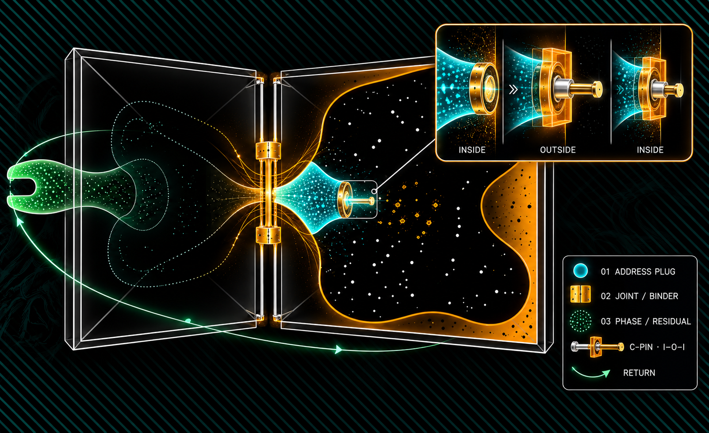
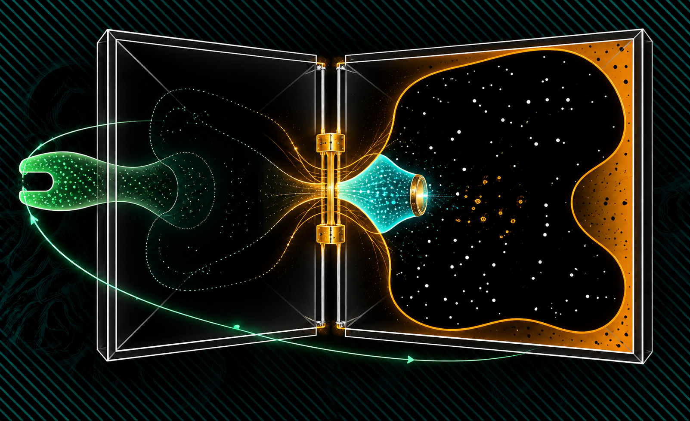
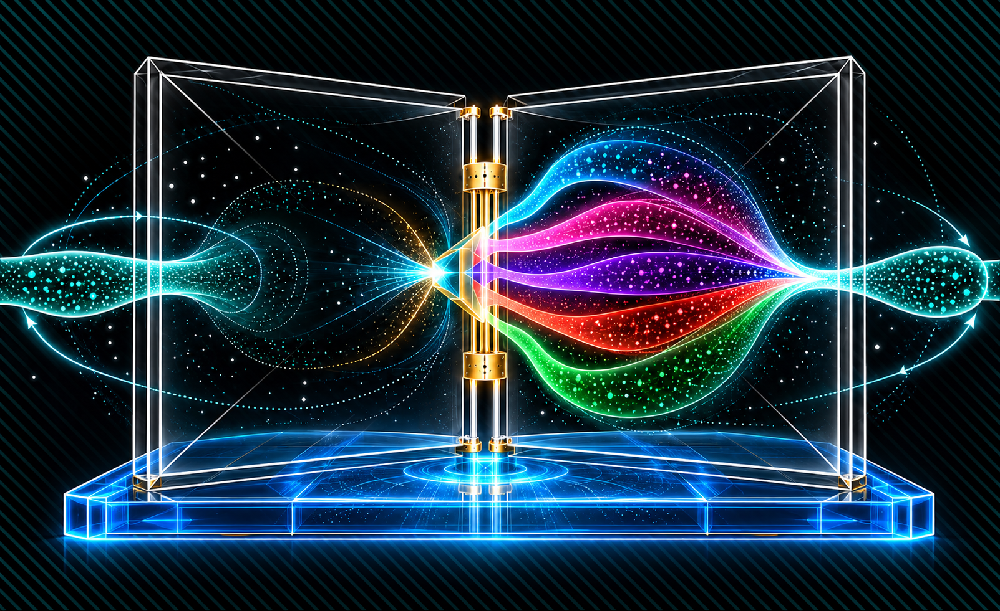
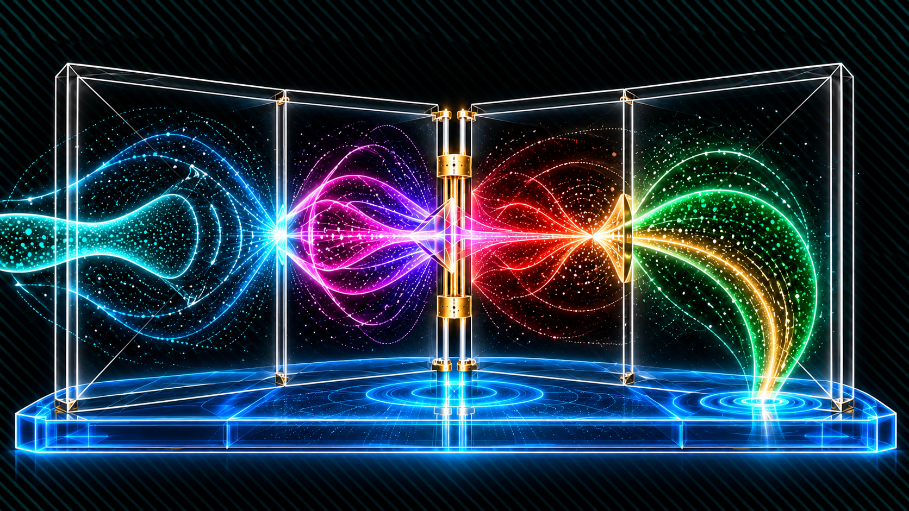
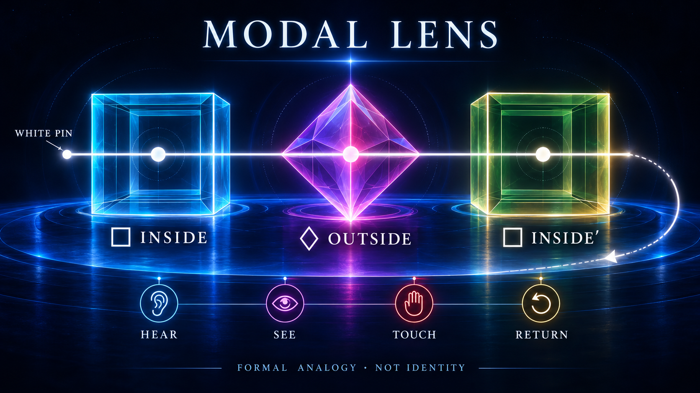
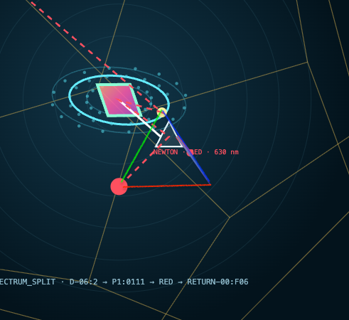
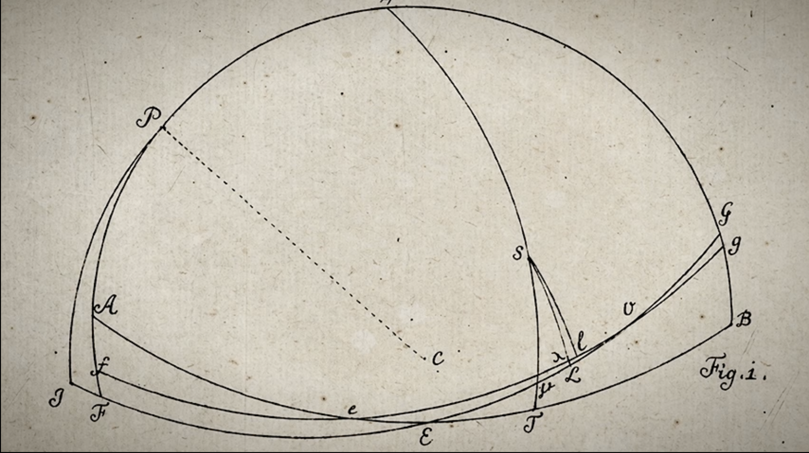

VISUAL BRIDGE · SOURCE-BOUND · NO NEW IDENTITY · A0 FREEZE UNTOUCHED
EINLEITUNG · TRIPTYCH + 1 UND MODAL LENS, EINE GEKOPPELTE LESEFOLGE
Das Buch öffnet das P(R)ISMA.
Die Serie liest dieselbe source-bound Komposition als Triptychon plus Return: Außenansicht, Rückkehransicht, spektrale Öffnung und Ψ-Lesefenster. Eine fünfte Modal Lens schreibt den Sichtwechsel als □ INSIDE → ◇ OUTSIDE → □ INSIDE′. Die weiße Achse hält den gemeinsamen Pin; die Blue Base trägt die Projektion. Farbe bezeichnet getrennte Ansichts- und Übergangskanäle — keine neue Physik und keine neue Identität.
Zwei Blätter, ein Kanal, zwei mögliche Lesefolgen.
Die Buchstaben bleiben getrennte Quellen. Erst Orientierung und Seitenbit bestimmen, ob die lokale Demonstration als Konsonant–Vokal oder Vokal–Konsonant gelesen wird. Das ist eine Glyphen- und Ordnungsansicht, kein allgemeines linguistisches Silbenmodell.
AI · VOWEL · SOURCE A
[=]
LI′ · CONSONANT · SOURCE B
BLUE CORNER · SOURCE / ALALA–L · linkes Blatt · Vokal/Konsonant als getrennte Adressen
Q¹ ↕ Q¹¹ · ELEVATOR AXESROTATE · DISTINGUISH · RETURN
Progression: AL → rotierender Cube / Seitenbit → PINKY. Der Cube ist Pivot, Carrier und View-Operator — keine dritte Quelle und kein linguistischer Beweis.
101 / SOURCE RECORDA | O | L
LOCAL READINGLA
SIDE BIT / RETURNR · C→V
Boundary:= hält dieselbe Kanaladresse und liest C→V. ≠ markiert den ausgelösten Ordnungswechsel zu V→C. Die Clamps [ ] erhalten beide Quellen; keine Gleichsetzung von Buchstabe, Laut und Silbe.

01 · CHURCH VIEW · OUTSIDE / META-VIEWDie Außenansicht macht Pin, Binder, Phase/Residual und Return gemeinsam lesbar. Das ist eine deklarierte Anschauung — kein geometrischer Beweis eines Church- oder Gödel-Satzes.

02 · RETURN VIEW · INSIDE′Gleiche Quelle, zweite Ansicht: Die weiße Achse hält oben und unten; der Ring-Pin markiert den Übergang INSIDE → OUTSIDE → INSIDE′.

03 · P(R)ISMA OPEN · BLUE BASE / FIVE CHANNELSDer Pin öffnet die Projektion: Cyan/Blue, Pink, Violett, Rot und Grün werden als getrennte Kanäle sichtbar und kehren in einen gemeinsamen Return zurück. Die Blue Base ist Träger und Orientierung — nicht eine zusätzliche Quelle.

04 · Ψ / TRIPTYCH + 1 · HÖREN / SEHEN / TOUCH / RETURNCyan liest den Wellenkanal, Pink/Violett die Apertur, Rot den Kontakt an der Naht; Grün/Gold führt über denselben White Pin zur Blue Base zurück. Das sind vier Lesefenster derselben Komposition — keine neuen Sinne, Quellen oder physikalischen Behauptungen.

05 · MODAL LENS · □ INSIDE / ◇ OUTSIDE / □ INSIDE′Die Formelquelle ist Kurt Gödels modales ontologisches Argument in der von Dana Scott überlieferten Fassung: P bezeichnet „positive Eigenschaft“, G „gottähnlich“, □ Notwendigkeit und ◇ Möglichkeit. Das Bild übersetzt nicht den Beweis Zeile für Zeile, sondern abstrahiert nur □ und ◇ als Leselinse: gebundene Innenansicht → mögliche Außenansicht → rückgebundenes Inside′. Der White Pin hält dabei die Referenz. Formale Analogie — weder theologischer oder empirischer Nachweis noch Identität mit einem Church-, Gödel- oder Turing-Satz.

Applied projection · Cruiser
Vergleichsansicht für Adressierung, Apertur und Rückschreiben. Keine gemeinsame Identität.

Historical form reference · Euler
Naht, Spalt, Tangente und Rückführung als historische Formreferenz. Kein Nachweis eines gemeinsamen Mechanismus.
ZUSAMMENFASSUNG · OPEN → DIFFERENTIATE → RETURN
Eine Naht, Triptych + 1, fünf Kanäle — und eine formale Linse.
IOI liefert die Bewegungsgrammatik. Q90 / White Pin hält Pivot und Faltung lesbar. Prime Foldings markiert Adressen und Grenzen. P(R)ISMA macht die Farbkanäle sichtbar; Blue Base hält die Orientierung. Die Modal Lens macht den Sichtwechsel als □ INSIDE → ◇ OUTSIDE → □ INSIDE′ lesbar, ohne daraus eine neue Identität abzuleiten. Der Rückweg bleibt explizit: SOURCE → VIEW → LOST INFORMATION / RESIDUAL → SECOND VIEW → RETURN.